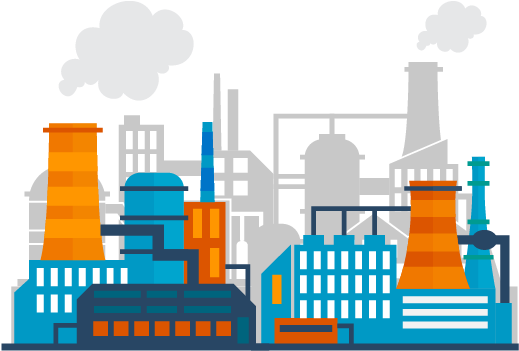

About the Goal and it's Importance
What is this Goal?

A functioning and resilient infrastructure is the foundation of every successful community. To meet future
challenges, our industries and infrastructure must be upgraded. For this, we need to promote innovative
sustainable technologies and ensure equal and universal access to information and financial markets. This
will bring prosperity, create jobs and make sure that we build stable and prosperous societies across the
globe.
The government's flagship interventions like Make in India and Start Up India as
well as Pandit
Deendayal
Upadhyay Shramev Jayate Karyakram are fuelling innovation and sustainable industrial and economic
development.
What is the Challenge?
The story of industrial development has been an important determinant of the course of our history as a
community of nations. From the first steam engines to the first assembly lines, to today’s truly global
production chains and processes, industry has changed our economies and helped drive major changes in our
societies. But without sustainable practices and infrastructure in place, our growth has left vast sections
of people behind. More than 937 million of the world’s population in 2016 do not have access to
electricity.
For many lower-income countries, the existent infrastructure constraints affect firm productivity by around
40%.
Solutions
1) Artificial Intelligence
AI and machine learning are driving innovations across industries and functional areas. AI-specific
hardware and new algorithms are being developed to optimize the existing systems and tackle new
challenges facing manufacturing. Factories are beginning to integrate AI across their production systems
and processes. Advanced AI makes it possible to conduct predictive maintenance, cognitive computing,
swarm intelligence, context-aware computing, smart machines, hardware accelerators, and generative
design. All of these technologies propel manufacturing facilities to move towards complete lights-out
manufacturing.
Industries such as Healthcare, Advertising, Manufacturing already
use AI
2) Advanced Robotics
Advancements in robotics make the processes in industry 4.0 faster, efficient, and safer. The most
prominent robotic technologies impacting manufacturing include autonomous robots, collaborative robots
(cobots), collaborative autonomous mobile robots, humanoid, mobile robots, cloud robotics, APIs, pick
and place robots, and robot swarms. The use of robots offers higher precision and agility while
improving the capability of rapidly developing customizable robots. Robots also free up time for the
human workforce to focus on other non-repetitive or high-value tasks.
Typical applications of robots include welding, painting, assembly, disassembly, pick and place for
printed circuit boards, packaging and labeling, palletizing, product inspection, and testing
3) Internet Of Everything
The machine-machine, human-machine, and human-human real-time connectedness together comprise the
internet of everything in manufacturing. It includes IIoT, internet of skills, internet of services,
internet of systems, and shop floor IoT. The internet of everything combines together real-time data,
machine intelligence, and human skills, resulting in faster, efficient, and cost-effective manufacturing
processes. Interoperability and a unified internet of things framework are crucial for the smooth
implementation of industry 4.0 facilities.
It is used most abundantly in manufacturing, transportation and utility organizations, making use of
sensors
4) Additive Manufacturing
Manufacturers constantly search for new technologies to cater to all aspects of the growing market
demand. Additive manufacturing, which started out as a prototyping technique, is revolutionizing and
decentralizing production. Hybrid manufacturing aims to integrate both additive manufacturing and
subtractive manufacturing. The advancement in material science and techniques such as stereolithography
and metal 3D printing enables a simple fabrication of intricate structures and complex components.
Additive manufacturing is making highly-customizable and sustainable cloud-based production a reality.
5) AR and VR
The physical and cognitive augmentation of humans forms another major industry 4.0 trend. The
limitations in humans are being augmented with the help of technologies such as wearables and
exoskeletons. Further, industrial mobile devices, natural and intuitive UI, and portable machine control
screens enhance the ease of using such technology. XR technologies like mixed reality (MR), augmented
reality (AR), and virtual reality (VR) are already in use in Industry 4.0 from the research and
development (R&D) to full-scale production and post-production processes. This multi-experience paradigm
is changing the way industrial manufacturing systems function. The nature of human-machine interaction
is aligning more toward machine-enabled workers.
6) Network
Network and connectivity are among the main driving forces in enabling Industry 4.0. A number of
technology developments such as edge-to-cloud, gigabit ethernet time-sensitive networks, low-power
wide-area network (LPWAN), 5G, machine-to-machine communication (M2M), real-time deterministic ethernet,
time-sensitive networking (TSN), ubiquitous radio access, unified IoT framework, and zero-touch networks
nudge factories to implement IIoT to transform into Industry 4.0 facilities. These technologies
constantly improve machine-machine and human-machine communication, as well as data transmission. As a
result, innovations in this area increase speed, improve security and efficiency, and reduce the cost of
network connectivity.